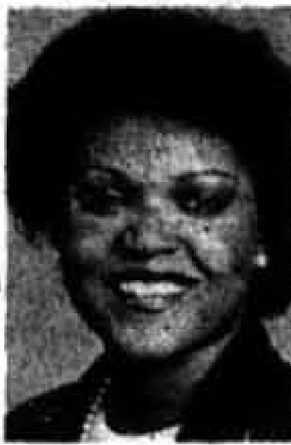
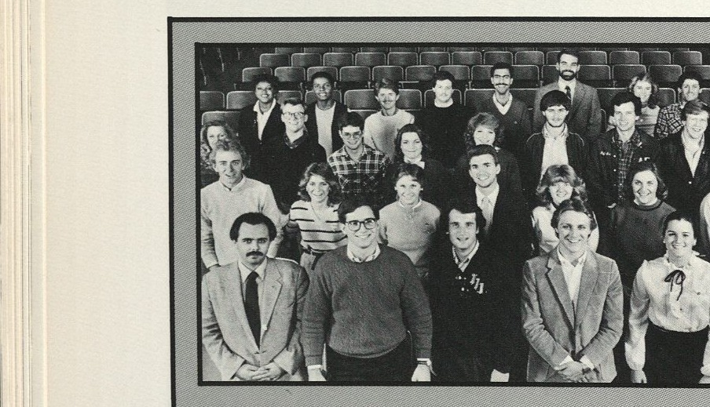

#
Norfleet wins the student regent runoff
No candidate won a majority in the February 9 student regent primary, forcing a runoff. Sandra Norfleet won the runoff on February 16.
Associated Students · academic year

Confirmed by her own byline in the Herald, 3 Feb 1983, plus the primary and election-night headlines in the same spring. SGA's own roster of former presidents, archived in September 2001, stars her as a student regent, so she held the Board seat as well as the presidency. An earlier reading here took the headline over her February 1983 piece, that the ASG presidency and the student regent position were separate, to mean she did not hold the seat. The headline will not carry that: the roster says she did, and the article body has not been read. SPELLING FLAG, not corrected: the 1983 Talisman's ASG group-photo caption (p. 232) prints her name "Margaret Regan," not "Ragan." Every other source cited here reads "Ragan"; left as printed elsewhere per the archive's flag-don't-fix rule.
Margaret Ragan survived the April 1982 Associated Student Government presidential primary along with Glenn Sargent, emerging from a five-way field. Endorsement letters for her ran in the Herald through both rounds of the election.
After the first general election was voided, Ragan won the presidency in the repeated election held April 20, 1982. She and the other new officers were sworn in before the month was out.
Midway through her term Ragan used the Herald's pages to explain that the ASG presidency and the student regent seat were now separate positions. Her spring saw a grade plan, a student shuttle vote, and a contested rewrite of the ASG constitution before Jack Smith was elected to succeed her.
Ragan's presidency came out of a disrupted spring. The Associated Student Government repeated its general election on 20 April 1982, after the Herald had reported the previous week that the first round's results were void.
She set out her agenda at the start of the fall term. Monica Dias reported in the Herald's second issue of the year that major ASG changes were envisioned by Margaret Ragan, and over the following months the congress took up a campus Wall of Fame, a joint coed housing poll with the Interhall Council, and a coed housing bill it approved in November.
Ragan also argued in print for keeping the two student offices distinct. In February 1983 the Herald carried her statement that the Associated Student Government and the student regent position were separate, in the same issue that reported the ASG shuttle service.
Sources for this account
Everything the archive holds on Margaret Ragan, gathered on one page.
Everyone the record shows in office this year. Each name goes to their own page, with every office they held and everything the archive says they did.
Won a repeated general election 20 April 1982 after the first was voided; succeeded by Jack Smith in April 1983.
Herald 57:57, 22 Apr 1982 PDFSworn in at the 29 April 1982 meeting, where he also went over how to write a resolution for the incoming Congress. The same minutes name him chairperson of both the Student Affairs Committee and the Legislative Research Committee.
ASG Minutes, 29 Apr 1982Sworn in at the 29 April 1982 meeting, where as Treasurer he moved two amendments to the by-laws on Congress absences, both adopted. The same minutes name him chairperson of the Finance Committee.
ASG Minutes, 29 Apr 1982Sworn in at the 29 April 1982 meeting, where as Secretary she went over the chart for handling motions. The same minutes name her chairperson of the Rules and Elections Committee.
ASG Minutes, 29 Apr 1982A LaCenter junior. Described ASG as a liaison between students and the administration, and said the ASG Congress proposed bills in weekly meetings that were then voted on by the administration once passed by Congress. The archive's 1981-82 Congress roll already anticipated this: it records her sworn in as Public Affairs Vice President for the following year on 27 April 1982.
1983 Talisman, "Parallel perspectives," p. 232 Herald 57:57 letters, 20 Apr 1982 Herald, 23 Aug 1983 (index: obituary) Herald, 8 Sep 1983, "Kerrie Stewart Remembered" Phi Mu Sorority composite, WKU Archives student organizationsAppointed parliamentarian at the 29 April 1982 meeting, with Lonnie Sears as alternate.
ASG Minutes, 29 Apr 1982Appointed Sergeant-At-Arms at the 29 April 1982 meeting, the same meeting that had confirmed him a Representative-at-Large.
ASG Minutes, 29 Apr 1982The 4 things student government staged or ran for the campus this year, drawn from the chronology below. Every one of them also appears on the programmes page, which runs the whole sixty years together.
No candidate won a majority in the February 9 student regent primary, forcing a runoff. Sandra Norfleet won the runoff on February 16.
The Herald reported that the Associated Student Government had backed William Natcher. The same issue previewed the ASG presidential primary set for the following Tuesday, and five days later the paper editorialized that endorsing was not wise for ASG.
Margaret Ragan and Glenn Sargent survived the Associated Student Government presidential primary, emerging from a five-way field.
The first general election was voided, and Margaret Ragan won the Associated Student Government presidency in the repeated election held April 20. She and the other new officers were sworn in before the month was out.
At its organizing meeting on 29 April 1982, the Congress elected under President Margaret Ragan reorganized its committee structure, amended its by-laws, and approved a slate of appointments to Congress seats.
The Herald's back-to-school issue reported that the student discount card carried 17 merchants. It succeeded the previous year's troubled card, which reached campus late, went undistributed for weeks and left students and businesses complaining by January. The card collapsed again the following autumn, when local merchants were left waiting for refunds.
Monica Dias reported that major ASG changes were envisioned by Margaret Ragan. The story ran in the Herald's second issue of the fall semester and was the paper's first substantial account of her plans.
Monica Dias reported that the Associated Student Government was considering a Wall of Fame. A week later the Herald followed with a report that the wall looked promising.
A student escort service jointly sponsored by Interhall Council, ASG and the university police began operating, walking women anywhere on campus from dark until midnight Sunday to Thursday on a single telephone number, with a vehicle in bad weather. Coordinator James Hunter said Western was the first university in the country with a completely volunteer, student-operated escort service, and that it had filled about 500 to 600 requests in its first year without a single incident. Public safety director Paul Bunch said requests for escorts had tripled after two students were raped the previous year.
500 to 600 requests filled in the first year
College Heights Herald, Vol. 58, No. 4, 2 September 1982 PDF
Resolution 82-1-F, dated 21 September 1982, requested special transportation from the Department of Public Safety for injured and handicapped students. It is the first numbered resolution of Margaret Ragan's session and the earliest transport proposal of a year that went on to put a campus shuttle service to a student vote.
SGA Resolution 82-1-F, Transportation for Injured or Handicapped
Jack Smith wrote to the Herald applauding the student escort service, about eight weeks after the volunteer scheme run with Interhall Council and the university police began. The same issue reported that a concert by Alabama had packed Diddle Arena and that a small parade had ended the Homecoming weekend.
Monica Dias reported that the Associated Student Government had approved a coed housing bill. The measure built through the fall: ASG and the Interhall Council polled students on coed housing in September, and ASG formally proposed it on 10 November.
Monica Dias reported that the Associated Student Government had broken from the student legislature. The break did not last, and by February 1984 the Herald was reporting that the Kentucky Intercollegiate State Legislature might join ASG again.
The Herald reported that the Associated Student Government failed to reach a quorum and did not meet. It was the first ASG item the paper carried after the winter break.
Jamie Morton reported that ASG supported the football proposal the Board of Regents was to consider at its Saturday session, alongside the bookstore. The same issue reported ticket sales down $20,000 as 1982 attendance declined, carried a Herald editorial urging the regents to veto more football spending, and printed a letter calling concert apathy pathetic.
The same issue that carried President Margaret Ragan's Herald piece explaining that the ASG presidency and student regent seat were now separate positions also reported ASG was considering a shuttle service, the proposal put to a student vote the following week.
Resolution 82-8-S, dated 8 February 1983, proposed that students use their athletic fees to get into games rather than individual tickets being sold. It followed the previous session's Resolution 81-8, which had asked only that the ticket price be cut, and preceded the outgoing congress's endorsement of a $15 athletic fee in April.
ASG passed a grade plan, and 206 students voted for a campus shuttle service.
Jamie Morton reported that ASG supported the plan for free admission to athletic events, and a companion piece in the same issue reported that support for free game admission was growing. It was the public face of Resolution 82-8-S, filed nine days earlier.
Twenty-four students were elected to the Associated Student Government Senate, the same issue reporting increased dormitory hours had been proposed.
At the meeting of 1 March 1983, Congress took up proposed changes to ASG's constitution.
At the meeting of 15 March 1983, Congress again took up the proposed changes to ASG's constitution, two days before the Herald reported the revision approved.
The Associated Student Government approved changes to its constitution, and ten students filed for offices ahead of the deadline. Dean Charles Keown publicly questioned the revisions the following week, as filings swelled to 68.
Resolution 82-9-S, dated 22 March 1983, requested a review of the College Heights Bookstore's new and used textbook policies. ASG had pressed the bookstore before, asking in January 1980 that it adopt a break-even policy on books, and the regents took the bookstore up themselves in January 1983.
About 500 students voted in the Associated Student Government primary. The Herald's letters pages carried a steady stream of endorsements for presidential candidate Jack Smith.
Jack Smith won the presidency of the Associated Student Government, and students voted for the ASG constitutional revisions on the same ballot. The Herald had dared students to vote at all in a sardonic election day editorial.
Gary Elmore reported that few women were using the student escort service, in the same issue in which Jamie Morton reported ASG discussing its plans for the following year. The same issue reported the University Center Board satisfied with its concert series.
The outgoing congress endorsed a $15 athletic fee. The vote came as the Board of Regents turned its focus to the budget.

Files mirrored on this site from the university archive. Each one links back to the original record.
The meeting that seated the incoming 1982-83 Congress under President Margaret Ragan. Congress approved a restructuring that folded the On-Campus, Off-Campus, Student Opinion Poll, Minority Affairs and International Students committees into a single Student Affairs Committee, renamed the Communications Committee to Public Relations, and dissolved the Complaints and Suggestions Committee. It then confirmed a full slate of representatives, who were sworn in, and approved the year's committee heads. Two by-law amendments on absences were also moved.
From the document · pages 1-3
All of the representatives were approved by Congress.Bills and resolutions from this session, held as files on this site.
Every source cited above, once, with the number of entries that rest on it.
Preferred citation
“1982-83,” SGA 60: Student Government at Western Kentucky University, 1966–2026, revised 31 August 2026, y/1982-83.html
Where a name on this page differs from the plaque in the SGA Chambers, the difference is explained above and recorded on the corrections page.